专题01 立体图形的四种考法

考点01 几何体的点、棱、面
考点02从不同方向看几何体
考点03点、棱、面之间关系
考点04几何体的表面积与体积

考点01 几何体的点、棱、面
1．若一个棱柱有 条棱，则它的底面一定是（ ）
条棱，则它的底面一定是（ ）
A．四边形 B．六边形 C．八边形 D．十二边形
【答案】C
【分析】本题考查认识立体图形，掌握棱柱的顶点、面数和棱的条数是正确判断前提．根据 棱柱中棱的条数为
棱柱中棱的条数为 ，由棱的总条数为，可求出答案．
，由棱的总条数为，可求出答案．
【详解】解：棱柱有条棱，又
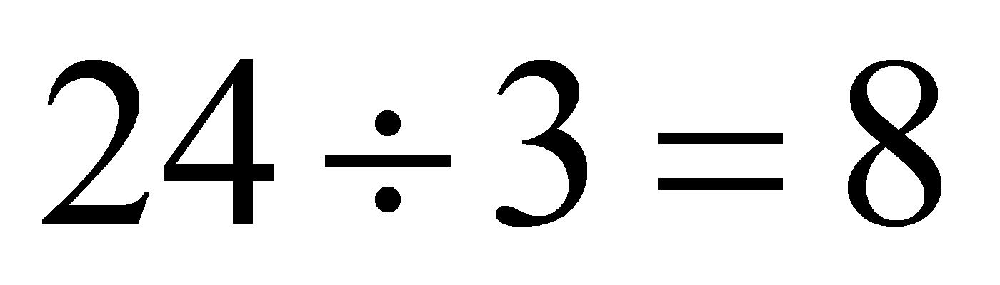
，因此底面是八边形，故选：C．
2．如果一个棱柱总共有 条棱，那么这个棱柱有 个顶点．
条棱，那么这个棱柱有 个顶点．
【答案】
【分析】本题主要考查棱柱的定义及面、棱、顶点的个数之间的关系，根据点、面、棱的关系进行求解即可，熟练掌握棱柱的基本性质是解题关键．
【详解】解：∵棱柱有 个面，有条棱
个面，有条棱 ，有
，有
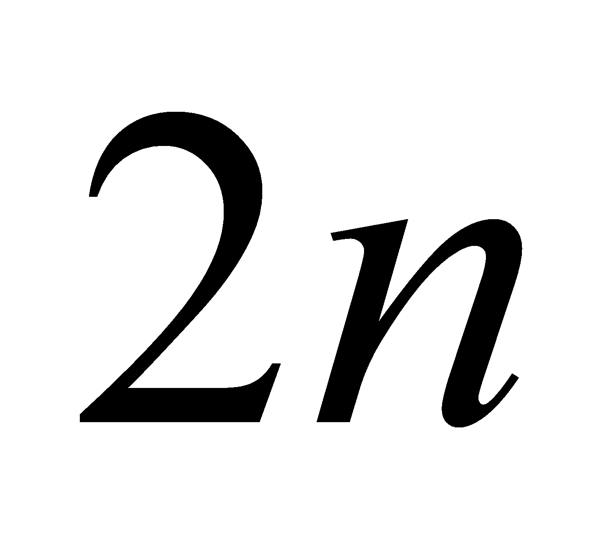
个顶点，∴当棱柱总共有条棱，
得
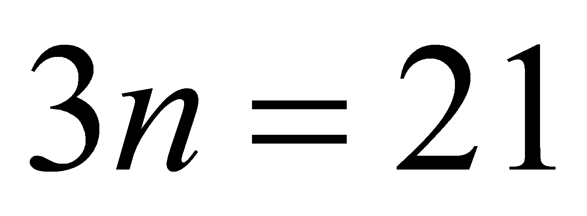
，∴ ，
，
∴
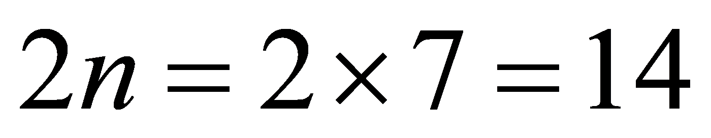
，故答案为：．
3．由若干个单位立方体组成一个较大的立方体，然后把这个大立方体的某些面上涂上油漆，油漆干后，把大立方体拆开成单位立方体，发现有45个单位立方体上任何一面都没有漆．那么大立方体被涂过油漆的面数是（ ）
A．1 B．2 C．3 D．4
【答案】D
【分析】题目主要考查立方体的逻辑判断，理解题意是解题关键
设大立方体棱长为n，显然
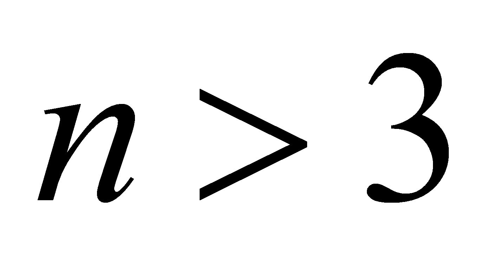
；若 ，即使六面都油漆过，未油漆的小方块也有
，即使六面都油漆过，未油漆的小方块也有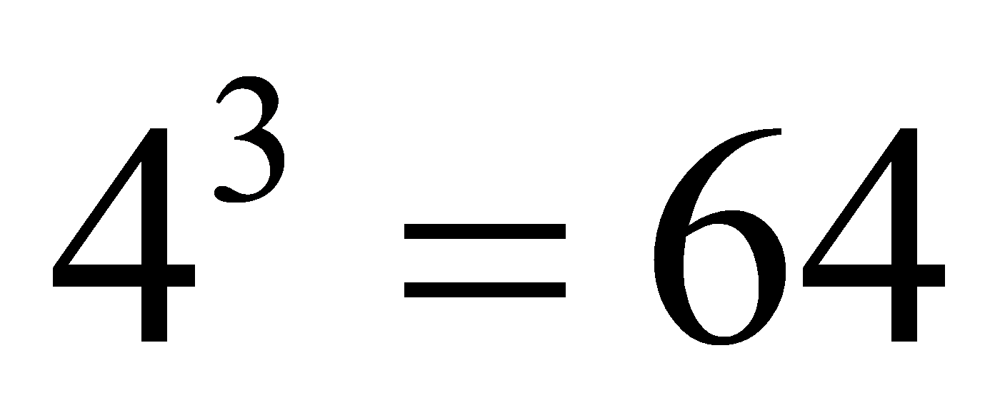
个，大于45，确定 或5，除掉已油漆的单位立方体后，剩下未漆的构成一个长方体，设其长宽高为a，b，c，结合题意求解即可
或5，除掉已油漆的单位立方体后，剩下未漆的构成一个长方体，设其长宽高为a，b，c，结合题意求解即可【详解】解：若，即使六面都油漆过，未油漆的小方块也有个，大于45．
∴或5．
除掉已油漆的单位立方体后，剩下未漆的构成一个长方体，
设其和长宽高为a，b，c，
则
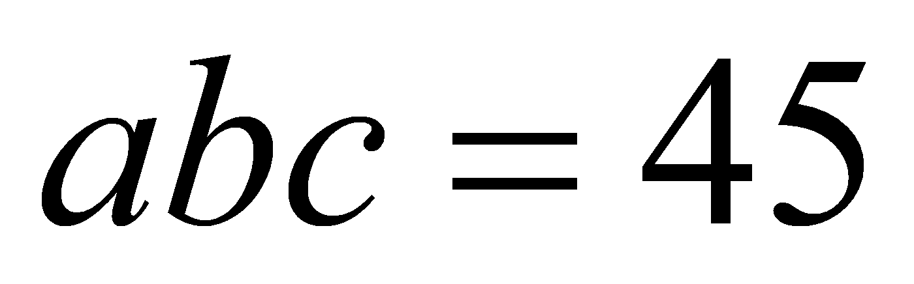
，且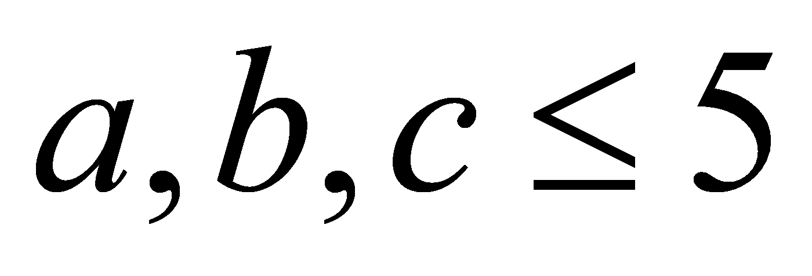
，∴只能是
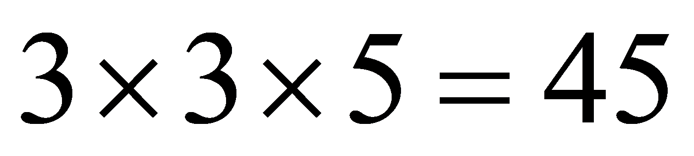
，即 ，它的4个面油漆过．
，它的4个面油漆过．
故选：D．
4．如图所示的几何体是由 个面组成的，其中平面有 个，曲面有 个；面与面相交形成 条线，其中直线有 条，曲线有 条．

【答案】 5 4 1 9 7 2
【分析】本题考查了几何体的构成要素及其分类的知识点，包括面（平面与曲面）、线（直线与曲线）的识别与计数，解题关键在于准确观察几何体结构，区分不同类型的面和线，并正确计数．先观察几何体，分别数出组成几何体的面的数量，再区分平面和曲面；接着数出面与面相交形成线的数量，再区分直线和曲线．
【详解】解：观察几何体可知，该几何体有上下两个底面（扇形），还有侧面（由 2个长方形平面和 1 个曲面组成），总共 个面；
个面；
其中平面有上下底面中的扇形的面和 2个长方形侧面，共 个平面；
个平面；
曲面有 1 个（即侧面中圆形对应的曲面部分）；
面与面相交形成线，上下底面的边以及侧面的边，总共 条线；
条线；
其中直线有上下底面中扇形的边和 2 个长方形侧面的边，共 条直线；
条直线；
曲线有 2 条（即上下底面中扇形的弧）．
故答案为：①5；②4；③1；④9；⑤7；⑥2．
5．工人叔叔在地面上用64个同样大小的小正方体拼成了一个大正方体，并把它的五个面涂上了颜色（贴地的那个面不涂色），其中3个面涂色的小正方体木块有 个，2个面涂色的有 个．
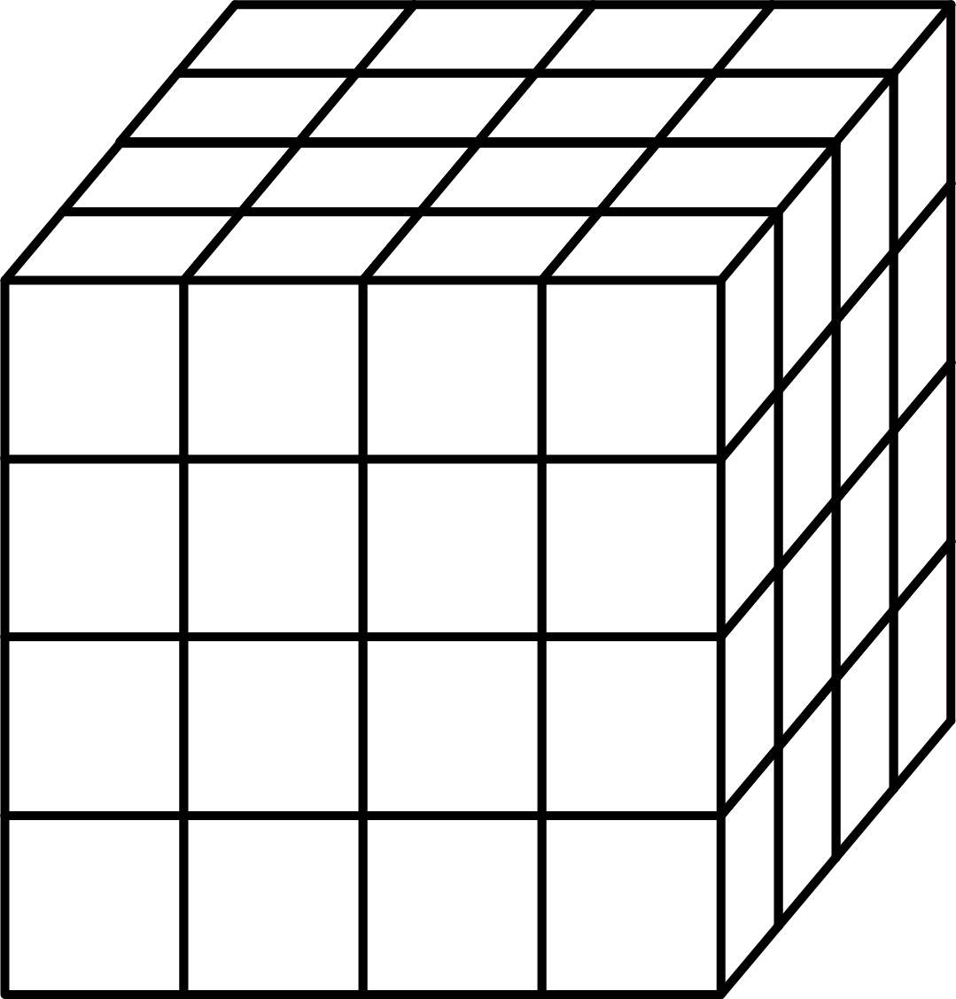
【答案】 4 20
【分析】本题考查了正方体的特征，解题的关键是根据大正方体的组成及涂色面的情况，分析不同涂色面小正方体的位置和数量．
先确定大正方体的棱长，再根据3个面涂色和2个面涂色小正方体的位置特点，分别计算其数量．
【详解】3个面涂色的小正方体在大正方体的顶点处，由于贴地的面不涂色，所以只有上面的4个顶点处的小正方体是3个面涂色的：
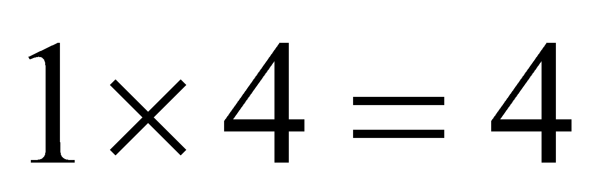
（个），2个面涂色有：
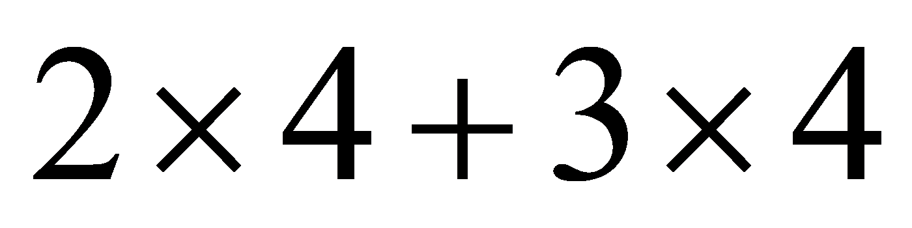
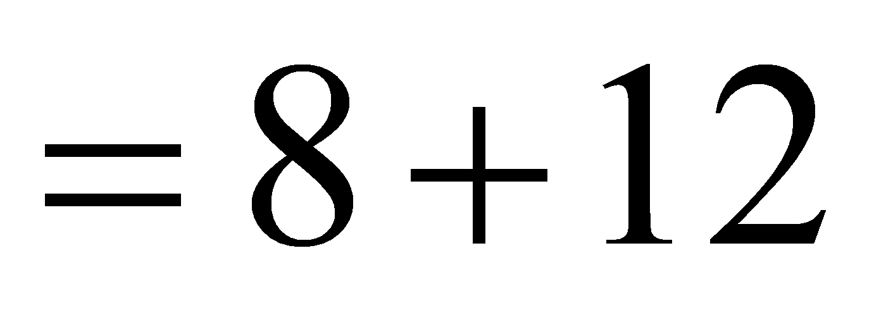
 （个）
（个）
所以3个面涂色的小正方体木块有4个，2个面涂色的有20个．
故答案为：4；20．
6．图是一个直七棱柱，它的底面边长都是2cm，侧棱长是5cm．观察这个棱柱，请回答下列问题：
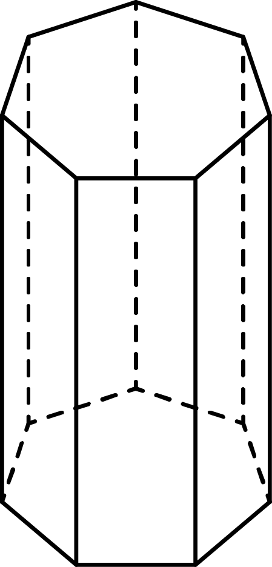
(1)这个七棱柱共有多少个面？它们分别是什么形状？这个七棱柱的侧面积是多少？
(2)这个七棱柱共有多少条棱？它们的长度和是多少？
(3)这个七棱柱共有多少个顶点？
(4)通过对七棱柱的观察，你能说出n棱柱共有几个顶点？几条棱？几个面吗？
【答案】(1)9，上、下两个底面是七边形，侧面是长方形，
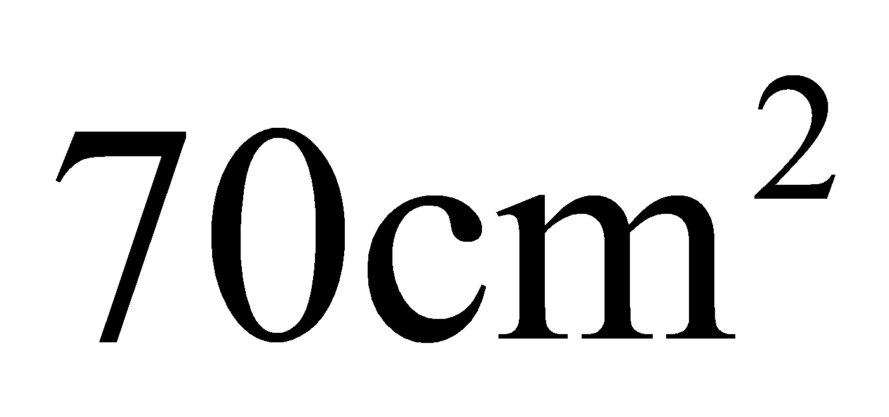
(2)21，
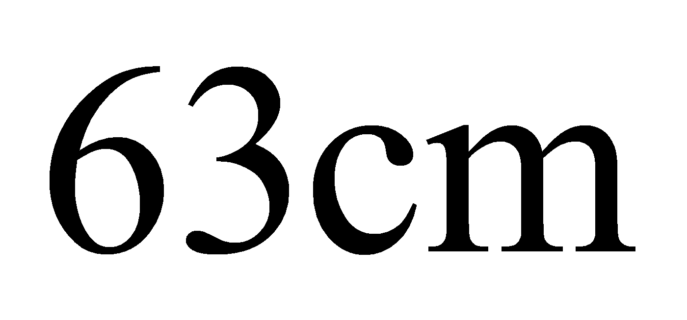
(3)14
(4)，，
【分析】本题考查了棱柱的基本特征，包括面、棱、顶点的数量及侧面积计算，解题的关键是理解直棱柱的结构特点，明确n棱柱中面、棱、顶点数量的规律．
（1）直棱柱的面包括上下两个底面和侧面，底面为n边形时侧面有n个；侧面积为底面边长乘侧棱长再乘侧面数量．
（2）n棱柱的棱包括上下底面的棱和侧棱，分别计算各类棱的数量和长度再求和．
（3）n棱柱的顶点数量为底面顶点数的2倍．
（4）通过七棱柱的特征归纳n棱柱面、棱、顶点的数量规律．
【详解】（1）解：这个七棱柱共有
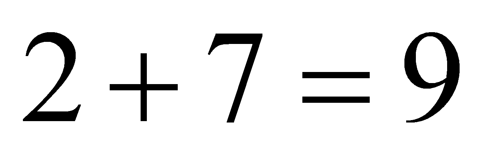
个面；上下两个底面是七边形，7个侧面是长方形．侧面积为
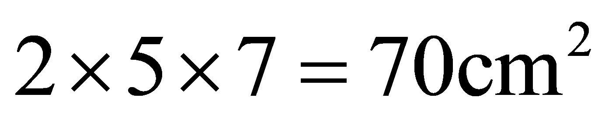
．答：共有9个面，上、下两个底面是七边形，侧面是长方形，侧面积是．
（2）解：这个七棱柱共有
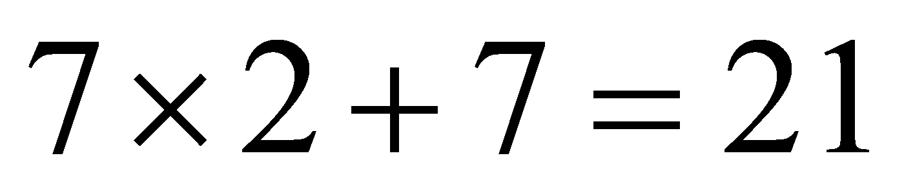
条棱；上下底面的棱各有7条，每条长 ，侧棱7条，每条长
，侧棱7条，每条长 ．
．棱长和为
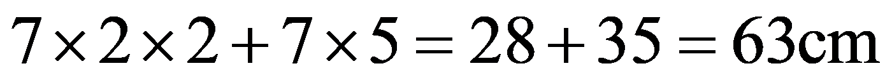
．答：共有 条棱，棱长和是
条棱，棱长和是 ．
．
（3）解：这个七棱柱共有
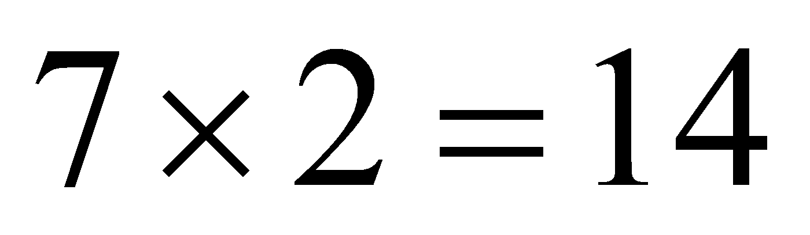
个顶点．答：共有
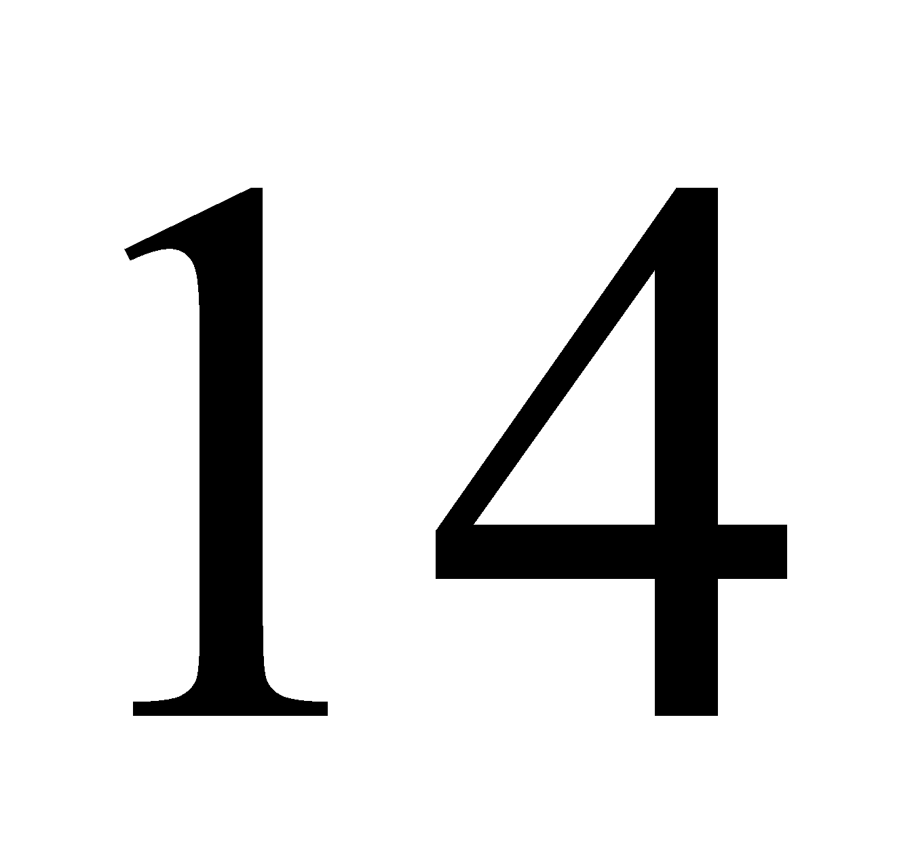
个顶点．（4）解：n棱柱共有 个顶点；共有条棱；共有
个顶点；共有条棱；共有 个面．
个面．
答：n棱柱共有个顶点，条棱，个面．
考点02 从不同方向看几何体
7．一个用小方块搭成的几何体，从正面、左面、上面看到的形状如下图，这个几何体一定是（ ）
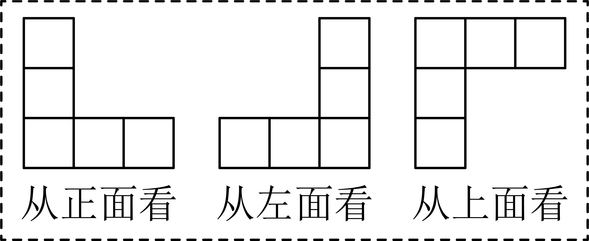
A．
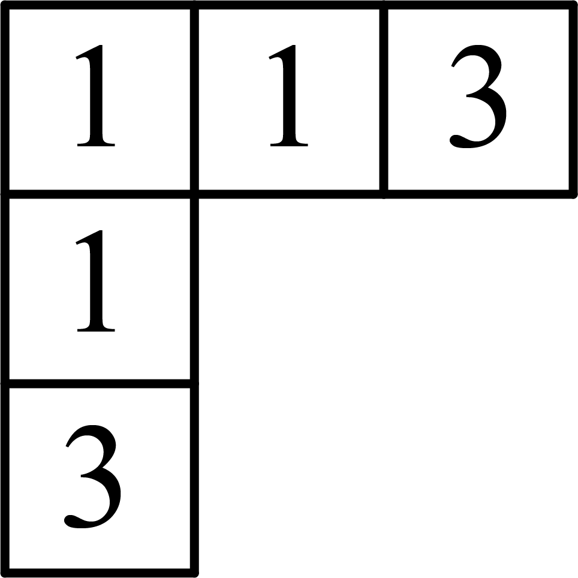
B．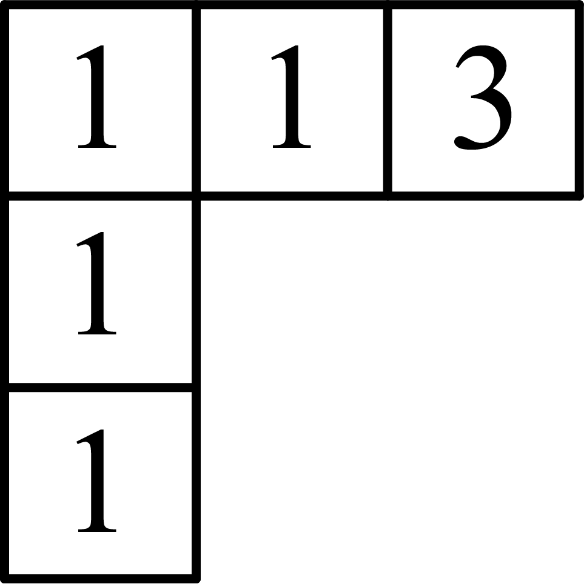
C．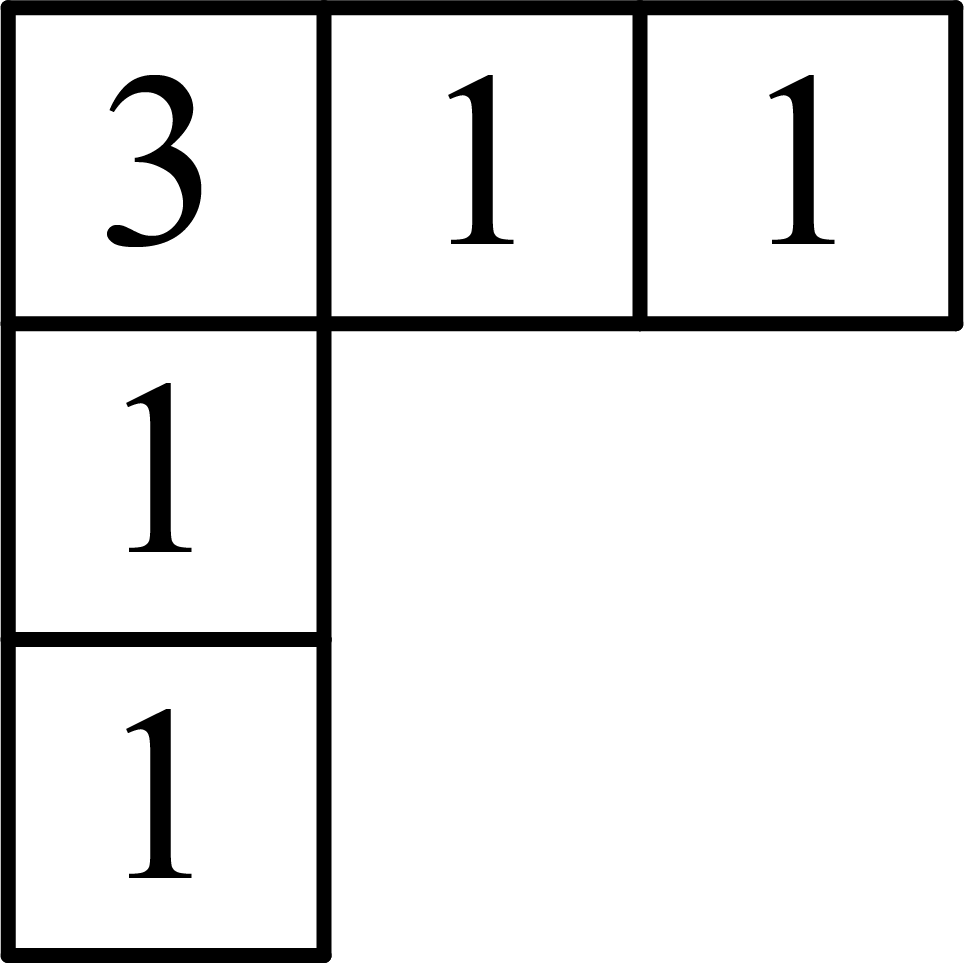
D．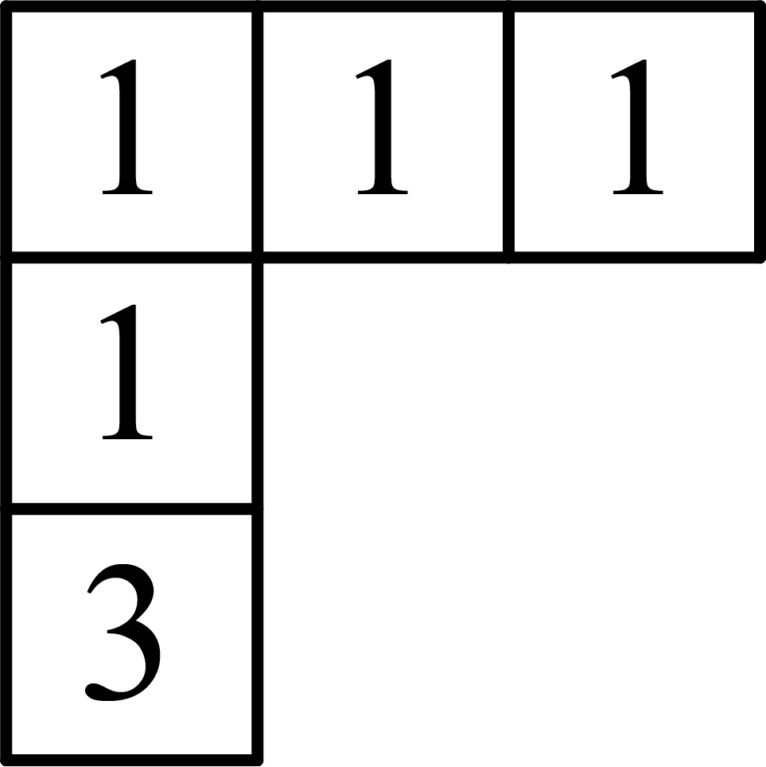
【答案】D
【分析】本题考查了从不同方向看物体，从上面看可以看出最底层小立方体的个数及形状，从正面看可以看出每一层小立方体的层数和个数，从左面看可以看出每一层小立方体的层数和个数，从而推测几何体的形状，掌握相关知识是解题的关键．
【详解】解：从上面看易得最底层小立方体的个数为5，第一行有3个，第二行与第三行都只有1个，左对齐，从正面看可知，第一列最高3层， 第二列与第三列只有1层，从左面看可知，第一列的第三行有3个，其余都是1个，
故选：D．
8．用小立方块搭一个几何体，从正面看与从上面看这个几何体得到的形状图如图所示，则它最多需要 个小立方块．
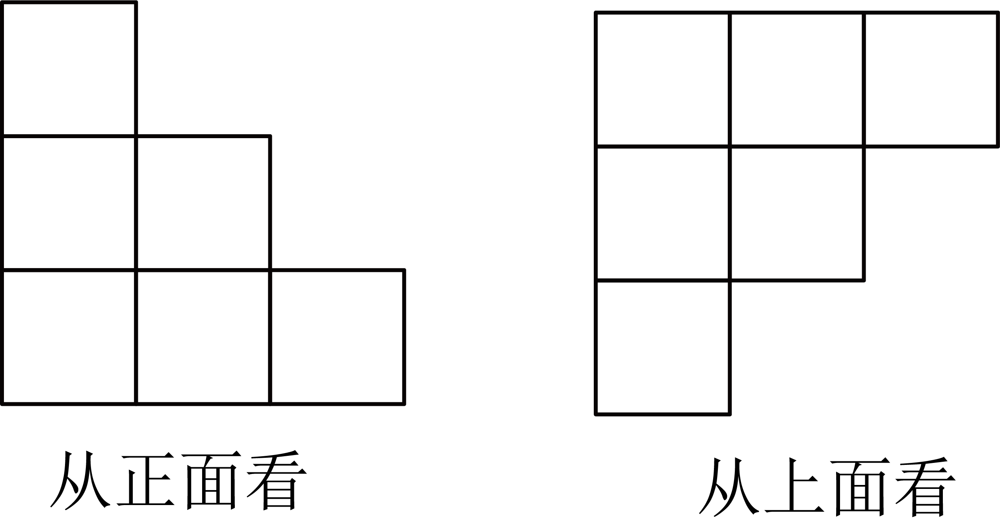
【答案】14
【分析】本题主要考查了从不同方向看几何体，较强的空间想象能力是解题的关键．
从正面看可以分清物体各部分的上下和左右位置；从上面看可以分清物体各部分的左右和前后位置，据此进行分析即可解答．
【详解】解：综合从正面看和从上面看到的图形可知：这个几何体的底层最多要 个小立方块；第二层最多要
个小立方块；第二层最多要 个，第三层最多要3个，因此这样的几何体最多要
个，第三层最多要3个，因此这样的几何体最多要
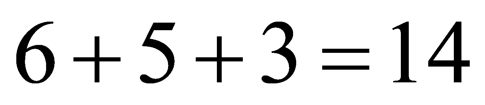
个．故答案为14．
9．一个几何体由若干个大小相同的小立方块搭成，从上面看到的几何体的形状图如图所示，其中小正方形中的数字表示在该位置上的小立方块的个数，请画出从正面和从左面看到的这个几何体的形状图．
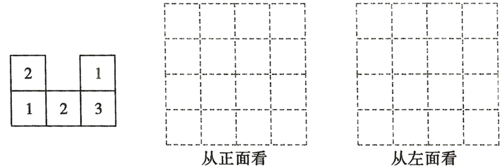
【答案】见解析
【分析】根据从正面看，从左面看的画图要求，画图解答即可．本题考查了几何体的从不同方向看，熟练掌握几何体的画法是解题的关键．
【详解】解：根据图中所示的小正方体的个数，
如图所示：
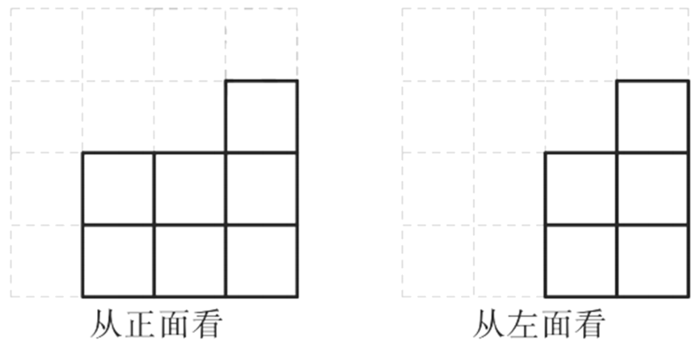
10．如图①所示，在平整的地面上，用多个棱长都为的小正方体堆成一个几何体．
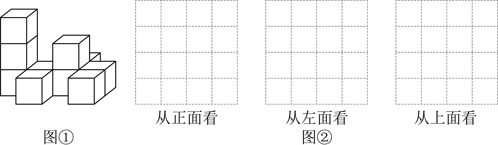
(1)一共有 个小正方体；
(2)在图②中画出这个几何体从正面、左面与上面看到的形状图，并求这个几何体的表面积；
(3)如果现在还有一些棱长都为的小正方体，要求保持从上面和左面看到的形状图都不变，最多可以再添加 个小正方体．
【答案】(1)10
(2)图见详解，
(3)5
【分析】本题考查从不同位置看简单组合体、几何体的表面积等知识点．
（1）根据图①可直接进行求解；
（2）根据几何体的特征可作图，进而先确定出表面正方形的个数，然后求出表面积即可；
（3）在从上面看到的形状图上的相应位置添加相应数量的正方体，直至最多即可解答．
【详解】（1）解：由图①可知一共有10个小正方体；
故答案为10；
（2）解：所作图形如下：
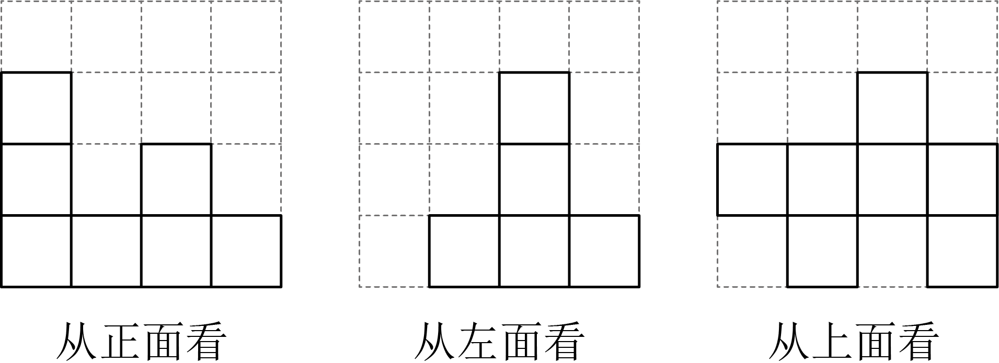
∴这个几何体的表面积
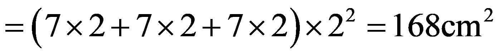
；（3）解：如图：在从上面看到的形状图上摆放相应数量的小正方体，使其从上面看到的形状图和从左面看到的形状图都不变，
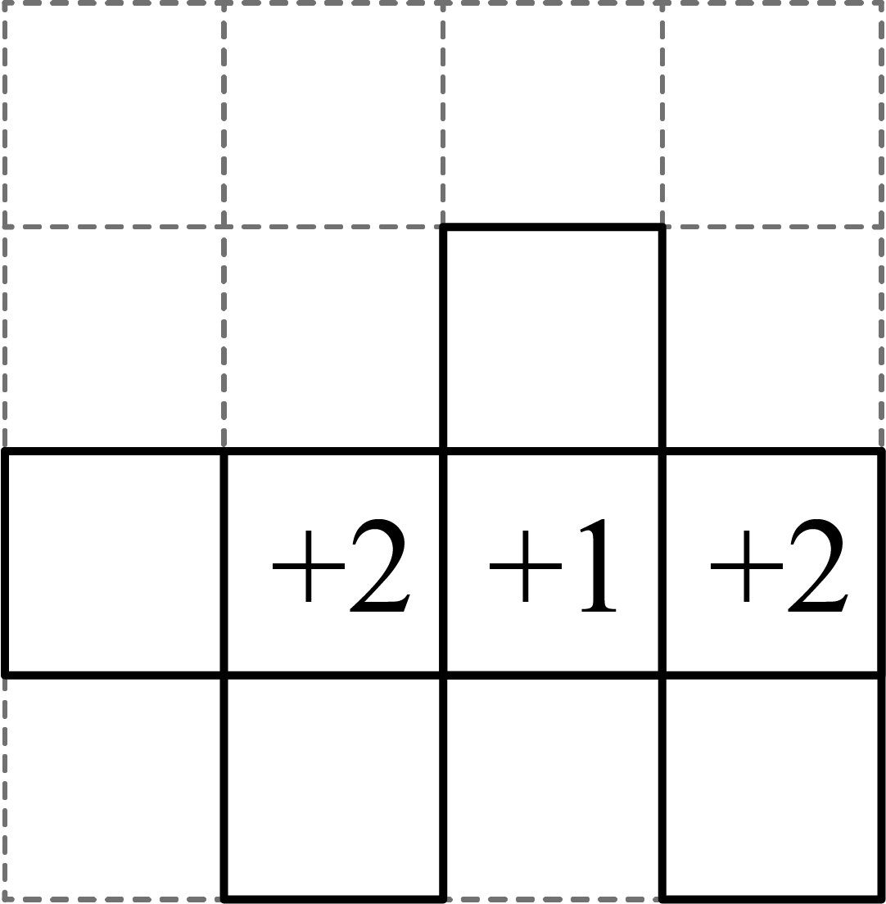
所以最多可以添加2+1+2=5个．
故答案为：5．
11．如图，是由一些棱长都为1的小正方体组合成的简单几何体．
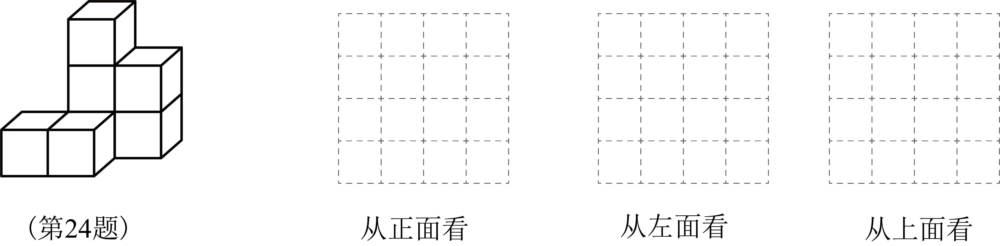
(1)该几何体的表面积（含下底面）为________；
(2)请画出这个几何体分别从正面、左面、上面看到的平面图形；
(3)如果在这个几何体上再添加一些相同的小正方体，并保持这个几何体从正面和从上面看到的图形不变，那么最多可以再添加_______个小正方体．
【答案】(1)
(2)见解析
(3)
【分析】本题考查了从不同方向看几何体；
（1）有顺序地计算上下面，左右面，前后面的表面积之和即可；
（2）从正面看得到从左往右3列正方形的个数依次为1，3，2；从左面看得到从左往右2列正方形的个数依次为3，1；从上面看得到从左往右3列正方形的个数依次为1，2，1，依此画出图形即可；
（3）根据保持这个几何体的主视图和俯视图不变，可知添加小正方体是中间1列前面的2个，依此即可求解．
【详解】（1）解：
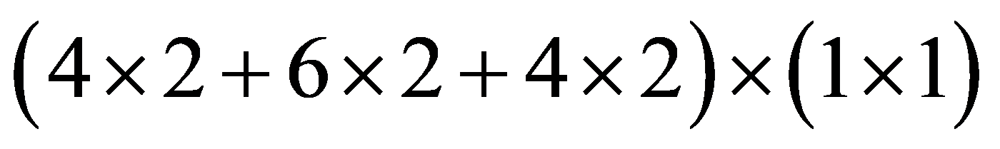
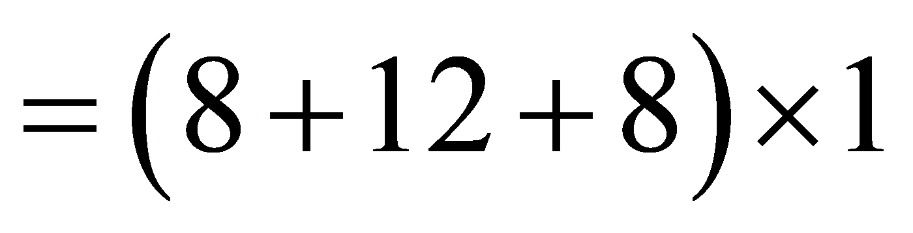
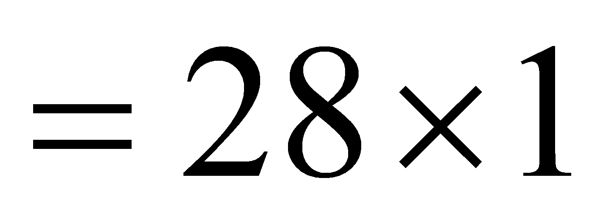

所以该几何体的表面积 含下底面
含下底面 为28，
为28，
故答案为：．
（2）如图所示：
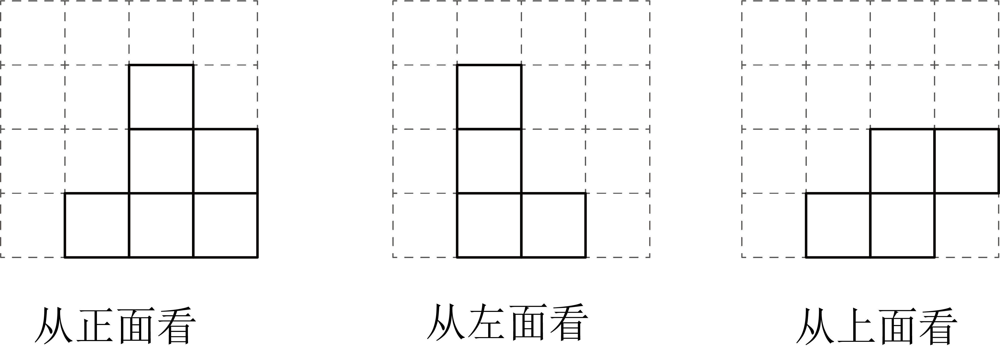
（3）添加小正方体是中间1列前面的2个，最多可以再添加2个小正方体
故答案为：．
考点03 点、棱、面之间关系
12．阅读材料题：由平的面围成的立体图形又叫做多面体，有几个面，就叫做几面体．三棱锥有四个面，所以三棱锥又叫四面体；正方体又叫做六面体；有五条侧棱的棱柱又叫做七面体．
(1)探索：如果把一个多面体的顶点数记为V，棱数记为E，面数记为F，填表：
多面体 | V | F | E |
|
四面体 | 4 | 6 | ||
长方体 | 6 | 2 | ||
五棱柱 | 10 | 7 | 15 | 2 |

(2)猜想：由上面的探究你能得到一个什么结论？
(3)应用（2）的结果对所有的多面体都成立，伟大的数学家欧拉证明了这个关系式，这个关系式叫做欧拉公式．根据欧拉公式，想一想会不会有一个多面体，它有10个面，30条棱，20个顶点？
【答案】(1)见解析
(2)
(3)不会有
【分析】本题考查了简单多面体的顶点数V、面数F及棱数E间的关系为：．这个公式叫欧拉公式．公式描述了简单多面体顶点数、面数、棱数特有的规律．
（1）分析题意，由题中所给的多面体，不难求得多面体的顶点数、棱数、面数，即可完成表格；
（2）接下来，观察表格中的数据便不难得到简单多面体中顶点数（V）面数（F）棱数（E）之间的关系；
（3）根据已知数据，结合顶点数V、面数F及棱数E间的关系，即可作出判断．
【详解】（1）解：填表如下：
多面体 | V | F | E |
|
四面体 | 4 | 4 | 6 | 2 |
长方体 | 8 | 6 | 12 | 2 |
五棱柱 | 10 | 7 | 15 | 2 |

（2）解：多面体的顶点数V、棱数E、面数F满足关系式：；
（3）解：不会有一个多面体，它有10个面，30条棱，20个顶点，
∵假如会有，
则，
根据题意：将
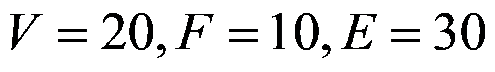
代入得，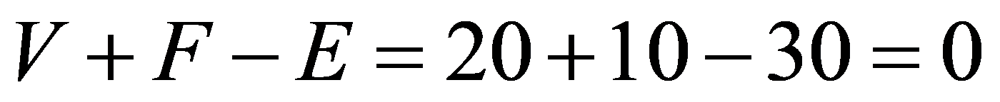
， ，与矛盾，
，与矛盾，∴不会有．
13．请你观察如图所示的几种简单多面体模型，解答下列问题：
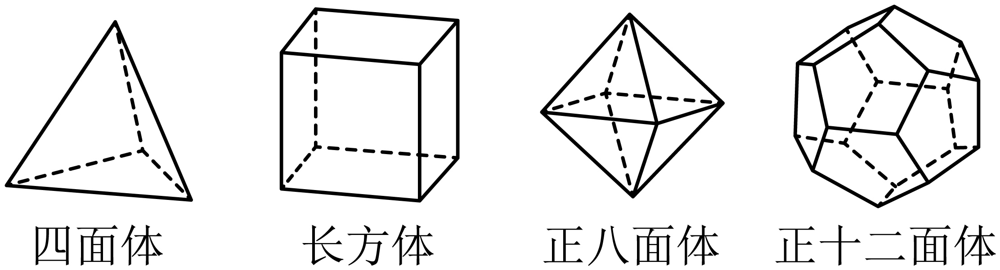
(1)根据上面多面体模型，完成表格：
多面体 | 顶点数（V） | 面数（F） | 棱数（E） |
四面体 | 4 | 4 | _______ |
长方体 | 8 | 6 | 12 |
正八面体 | _______ | 8 | 12 |
正十二面体 | 20 | 12 | 30 |
你发现顶点数（V）、面数（F）、棱数（E）之间存在的关系式是______________．
(2)一个多面体的面数与顶点数相等，有12条棱，这个多面体是_______面体．
【答案】(1)6，6，
(2)七
【分析】本题主要考查立体图形的特点，一元一次方程的运用，理解表格信息是解题的关键．
（1）根据题意图形的特点分析即可求解；
（2）根据（1）中的结论，设多面体的面数为 ，则顶点数为，由此列式求解即可．
，则顶点数为，由此列式求解即可．
【详解】（1）解：根据图示得到，四面体的棱数为6，正八面体的顶点数为6，
∵
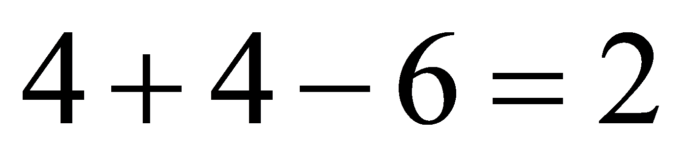
， ，
，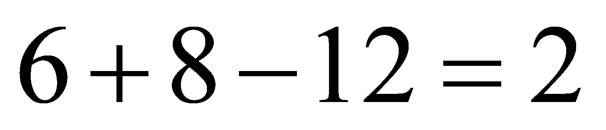
，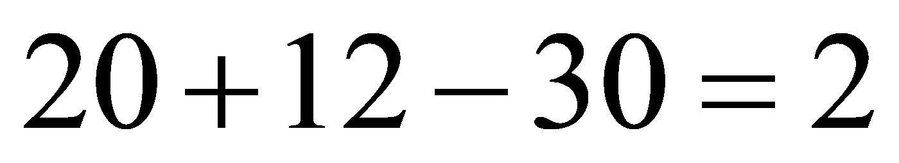
，∴
故答案为：6,，6，；
（2）解：设多面体的面数为，则顶点数为，
∴
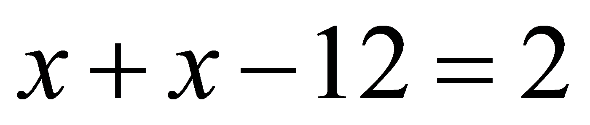
，解得，
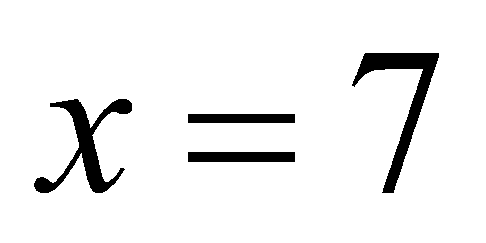
，∴这个多面体是七面体，
故答案为：七．
14．如图，观察下列几何体并回答问题：
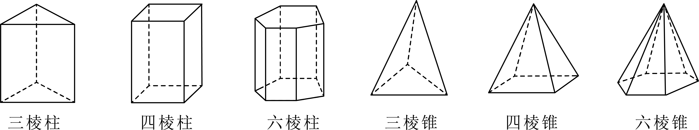
(1)n棱柱有__________个面、__________条棱、__________个顶点，n棱锥有__________个面、__________条棱、__________个顶点；
(2)所有像三棱柱、四棱柱、六棱柱、三棱锥等这样由四个或四个以上多边形所围成的立体图形叫作多面体．经过前人归纳总结发现，多面体的面数F、顶点个数V以及棱的条数E之间存在着一定的数量关系．
①继续观察如图所示多面体，并把表格填写完整：
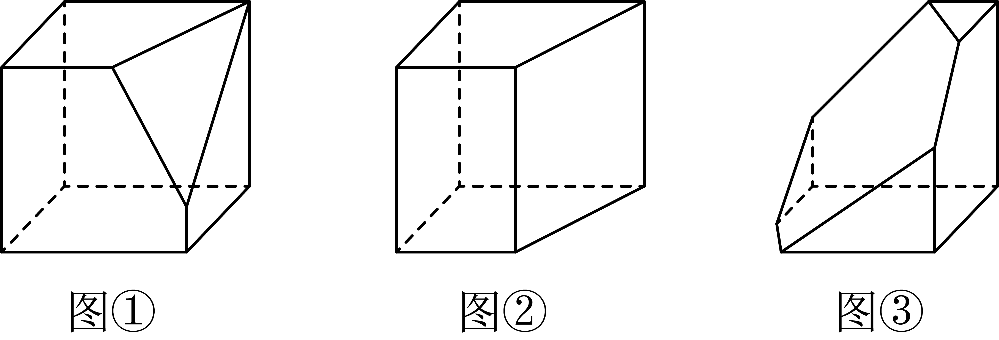
面数（F） | 顶点数（V） | 棱数（E） | |
图① | |||
图② | |||
图③ |
②分析表格中的数据，你能发现F、V、E三者之间有何关系 ．
【答案】(1)
(2)①见解析；②
【分析】本题主要考查了棱柱和棱锥，
对于（1），根据棱柱的面数比侧面数多2，棱数是侧面数的3倍，顶点数是侧面数的2倍；再根据棱锥的面数比侧面多1，棱数是侧面数的2倍，顶点数比侧面数多1，可解答；
对于（2），分别数出面数，顶点数，棱数，可解答①，再根据三个数的关系解答②.
【详解】（1）解：n棱柱有 个面，条棱，个顶点，n棱锥有个面，条棱，个顶点；
个面，条棱，个顶点，n棱锥有个面，条棱，个顶点；
故答案为：；；；；； ；
；
（2）解①：图①的面数为7个，顶点数为9个，棱数为14条；
图②的面数为6个，顶点数为8个，棱数为12条；
图③的面数为7个，顶点数为10个，棱数为15条；
列表如下：
面数（F） | 顶点数（V） | 棱数（E） | |
图① | 7 | 9 | 14 |
图② | 6 | 8 | 12 |
图③ | 7 | 10 | 15 |
②表格中的数据，你能发现F，V，E三者之间的关系为：.
故答案为：.
15．观察如图所示的几何体，回答下列问题：
(1)填写表格：
图形名称 | 底面边数 | 侧面数 | 侧棱数 | 顶点数 | |
图① | 三棱柱 | ||||
图② | 四棱柱 | ||||
图③ | 六棱柱 |
(2)根据（1）中的结果，猜想棱柱的侧面数、侧棱数、顶点数与棱柱的底面边数之间的关系．
(3)根据（2）中的猜想，直接写出二十棱柱的侧面数、侧棱数和顶点数．
【答案】(1)见解析；
(2)棱柱的侧面数=棱柱的底面边数，棱柱的侧棱数=棱柱的底面边数，棱柱的顶点数=棱柱的底面边数×2；
(3)20，20，40．
【分析】本题考查了多面体尤其是棱柱的基本概念和属性，包括底面边数、侧面数、侧棱数及顶点数之间的关系，以及通过观察具体实例归纳一般规律的能力．解题的关键在于准确识别和计算给定几何体的各项数值，进而发现并应用棱柱的底面边数与侧面数、侧棱数、顶点数之间的固定关系，即棱柱的侧面数和侧棱数均等于其底面边数，而顶点数则是底面边数的两倍．
（1）通过观察几何体的特征来确定各项数值；
（2）根据（1）的结果找规律；
（3）利用（2）得出的规律计算．
【详解】（1）解：填表如下：
图形名称 | 底面边数 | 侧面数 | 侧棱数 | 顶点数 | |
图① | 三棱柱 | 3 | 3 | 3 | 6 |
图② | 四棱柱 | 4 | 4 | 4 | 8 |
图③ | 六棱柱 | 6 | 6 | 6 | 12 |
（2）棱柱的侧面数=棱柱的底面边数，棱柱的侧棱数=棱柱的底面边数，棱柱的顶点数=棱柱的底面边数
（3）二十棱柱的侧面数是20、侧棱数是20、顶点数是40．
考点04 几何体的表面积与体积
16．综合与实践
【问题情境】在一次数学实践活动课上，同学们利用一张边长为 的正方形纸板开展了“长方体纸盒的制作”实践活动
的正方形纸板开展了“长方体纸盒的制作”实践活动
（1）图1中，是无盖正方体的表面展开图的是______．（填序号）
【操作探究】如图2，勤学小组的同学先在纸板四角剪去四个同样大小边长为的小正方形，再沿虚线折合起来，制成了一个无盖的长方体纸盒．
如图3，善思小组的同学先在纸板四角剪去两个同样大小边长为 的小正方形和两个同样大小的小长方形，再沿虚线折合起来，制成了一个有盖的长方体纸盒．
的小正方形和两个同样大小的小长方形，再沿虚线折合起来，制成了一个有盖的长方体纸盒．
【计算分析】
（2）①图2中的长方体纸盒的底面周长为______ ；
；
②图3中的长方体纸盒的体积为______ ；
；
【问题解决】
（3）请你利用边长为的正方形纸板制作一个长方体纸盒（无盖，有盖均可），仿照图2，图3的绘图方式，画出2种不同的裁剪设计图．
【答案】（1）①；（2）①40；②294；（3）见解析
【分析】本题考查展开图折叠成几何体，掌握棱柱展开图的特征是正确解答的关键．
（1）根据正方体表面展开图的特征进行判断即可；
（2）①根据裁剪方法得出底面是边长为 的正方形即可；②得出长方体的长、宽、高，再根据长方体的体积的计算方法进行计算即可；
的正方形即可；②得出长方体的长、宽、高，再根据长方体的体积的计算方法进行计算即可；
（3）根据棱柱的展开与折叠的方法进行解答即可．
【详解】解：（1）根据正方体表面展开图的“田凹应弃之”可得，是无盖正方体的表面展开图的是①，
故答案为：①；
（2）①图1中的正方体的底面是边长为 的正方形，因此底面周长为
的正方形，因此底面周长为 ，
，
故答案为：40；
②由折叠可知，图2中长方体纸盒的长为 ，宽为
，宽为 ，高为，
，高为，
所以体积为 ，
，
故答案为：294；
（3）利用边长为的正方形纸板，利用按照图3的裁剪方法可制作一个有盖的长方体纸盒，利用按照图4的裁剪方法可制作一个无盖的长方体纸盒．

17．（一）实践准备
李老师带领七一班综合实践小组进行废物再利用的数学制作活动，他们准备用废弃的宣传单制作纸盒（有盖或无盖）．
（二）操作探究
（1）如图是“乐研组”制作的一个正方体纸盒的展开图，正方体的各面分别标有“南，阳，值，得，三，顾”六个字，则“阳”相对面的文字是_________
（2）“爱数组”准备制作一个无盖的正方体纸盒，则下列_________（填字母）图形经过折叠能围成无盖正方体纸盒．
A． B．
C． D．
（三）尝试应用
（3）如图2，这是一张长为、宽为 的长方形包装纸，现要制成牛奶盒子．上下各留宽度均为
的长方形包装纸，现要制成牛奶盒子．上下各留宽度均为 的一个长方形，中间剩余部分用于制作牛奶盒身．如图3，将牛奶盒身分成四块长方形，其中①③长方形大小相同，②④长方形大小也相同，且②号长方形的宽比①号多
的一个长方形，中间剩余部分用于制作牛奶盒身．如图3，将牛奶盒身分成四块长方形，其中①③长方形大小相同，②④长方形大小也相同，且②号长方形的宽比①号多 ．把图3中的包装纸折成图4中的牛奶盒子，想要装下的牛奶是否能成功？为什么？
．把图3中的包装纸折成图4中的牛奶盒子，想要装下的牛奶是否能成功？为什么？
【答案】（1）得；（2）C；（3）能成功，见解析
【分析】本题主要考查了正方体与长方体展开图的认识，熟知正方体与长方体展开图的特点是解题的关键．
（1）正方体展开图中，相对的面的中间一定隔着一个面，据此特点求解即可；
（2）制作一个无盖的正方体纸盒，则该纸盒的展开图有5个小正方形，据此可得答案；
（3）求出牛奶盒身的宽，再分别求出①和②的宽，进而求出牛奶盒的容积即可得到结论．
【详解】解：（1）由正方体展开图的特点可得“阳”相对面的文字是“得”；
（2）∵制作一个无盖的正方体纸盒，
∴该纸盒的展开图有5个小正方形，
∴四个选项中只有C选项符合题意；
（3）能成功，理由如下：
牛奶盒身的宽为，
已知②号长方形的宽比①号多，
则①号长方形的宽为，
所以②号长方形的宽为，
此时牛奶盒子的容积为．
∵，
∴装下的牛奶能成功．
18．【问题情境】 《制作无盖的长方体纸盒》是苏科版数学课本七年级上册的课题学习内容，某综合实践小组参考这一课题中的内容，开展了“制作长方体纸盒”的实践活动．
【问题解决】
(1)在如图1所示的四个图形中，能够通过折叠围成有盖的长方体纸盒的是______（填序号）．
(2)该小组利用边长为 的正方形纸板设计了如下两种不同的制作长方体纸盒的方案．
的正方形纸板设计了如下两种不同的制作长方体纸盒的方案．
①按如图2所示的方案制作一个无盖的长方体纸盒，其操作步骤为：先在纸板的四个角上剪去 个边长为
个边长为 的小正方形，再沿虚线折叠纸板．若，
的小正方形，再沿虚线折叠纸板．若， ，则该无盖长方体纸盒的底面周长为_______
，则该无盖长方体纸盒的底面周长为_______ ．
．
②按如图3所示的方案制作一个有盖的长方体纸盒，其操作步骤为：先在纸板的四个角上剪去个边长为 的小正方形和个同样大小的小长方形，再沿虚线折叠纸板．若
的小正方形和个同样大小的小长方形，再沿虚线折叠纸板．若 ，
， ，求该有盖长方体纸盒的体积．
，求该有盖长方体纸盒的体积．
【答案】(1)①②④
(2)① ；②
；②
【分析】本题考查展开图折叠成几何体，掌握棱柱的展开图的特征是正确解答的前提，根据展开图得出折叠后长方体的长、宽、高是解决问题的关键．
（1）根据长方体的展开图特征求解即可；
（2）①由折叠可得底面是边长为 的正方形，进而求出底面周长即可；②由展开与折叠可知，折叠成长方体的长、宽、高分别为
的正方形，进而求出底面周长即可；②由展开与折叠可知，折叠成长方体的长、宽、高分别为 、
、 、
、 ，根据体积公式进行计算即可．
，根据体积公式进行计算即可．
【详解】（1）解：能够通过折叠围成有盖的长方体纸盒的是①②④，故答案为：①②④；
（2）①该无盖长方体纸盒的底面周长为 ，
，
故答案为： ；
；
②该长方体纸盒的长为 ，宽为
，宽为 ，高为
，高为 ，
，
 该有盖长方体纸盒的体积为
该有盖长方体纸盒的体积为 ．
．
19．综合实践小组准备用废弃的宣传单制作装垃圾的无盖纸盒．
【操作探究】（ ）综合实践小组准备制作一个无盖的正方体纸盒，如图中只有四个正方形，请在原图上补画一个正方形，使其经过折叠能围成无盖的正方体纸盒；
）综合实践小组准备制作一个无盖的正方体纸盒，如图中只有四个正方形，请在原图上补画一个正方形，使其经过折叠能围成无盖的正方体纸盒；
【问题解决】（）图是综合实践小组的设计图，把它折成无盖的正方体纸盒后与有“卫”字一面的相对面上的字是______；（字在盒外）
【拓展探究】（ ）如图，有一张边长为的正方形废弃宣传单，小华准备将其四角各剪去一个相同的小正方形，折成一个无盖长方体纸盒.当四角剪去的小正方形的边长为
）如图，有一张边长为的正方形废弃宣传单，小华准备将其四角各剪去一个相同的小正方形，折成一个无盖长方体纸盒.当四角剪去的小正方形的边长为 时，请求出纸盒的容积．（纸张厚度忽略不计）
时，请求出纸盒的容积．（纸张厚度忽略不计）
【答案】（）画图见解析（答案不唯一）；（）“大”； （）
【分析】（）根据题意画出图形即可；
（）根据正方体的平面展开图中，相对的面中间必须隔着一个正方形进行解答即可求解；
（）根据长方体体积公式计算即可；
本题考查了正方体的展开图，长方体的体积，正确识图是解题的关键．
【详解】（）画图如下：
（）∵正方体的平面展开图中，相对的面中间必须隔着一个正方形，
∴“卫”和“大”相对，
故答案为：“大”；
（）纸盒的容积．
答：纸盒的容积为．
20．综合实践
“长方体纸盒的制作”实践活动 | ||
素材 一 | 走进商场，各种各样的商品琳琅满目，其中很多商品有着形形色色的包装盒．作为吸引顾客的第一道惊喜，厂家对包装盒的设计与制作可谓煞费苦心．包装盒上同样蕴涵着丰富的数学知识，而设计师与企业家们都是数学能手，对包装盒的设计在更优、更省、更美的目标上精益求精． | |
素材二 | 某纸箱厂用边长为的正方形纸板设计出两种不同的方案制作长方体盒子用于包装瓷器（图1为无盖的长方体纸盒，图2为有盖的长方体纸盒）①图1方式设计制作一个无盖的长方体盒子的方法：先在纸板四个角剪去四个同样大小边长为 ②图2方式设计制作一个有盖的长方体纸盒的方法：先在纸板四个角剪去两个同样大小边长为 | |
素材三 | 包装盒的拆解，我们可以将同一形状的包装盒进行不同方式的拆解，从而得到不同的表面展开图．下面是对一个无盖长方体盒子（它缺一个长为8cm，宽为5cm的长方形盖子）的长、宽、高分别为 | |
任务一 | 下列图形中，不是无盖正方体盒子的表面展开图的是______（填序号）． | |
任务二 | 由材料二可知，图1长方体纸盒的底面周长为_____cm（用含 图2的设计中，如果，计算该长方体纸盒的体积． | |
任务二 | 在材料三，这个无盖长方体的其它不同平面展开图中，请你画出该无盖长方体外围周长最大的一种表面展开图，并求出最大外围周长的值． | |
 的小正方形，再沿虚线折合起来．
的小正方形，再沿虚线折合起来． 、
、 、
、 进行拆解，如图是该长方体盒子的一种平面展开图，它的外围周长为
进行拆解，如图是该长方体盒子的一种平面展开图，它的外围周长为 ．事实上，该长方体盒子的平面展开图还有不少种不同的方法．
．事实上，该长方体盒子的平面展开图还有不少种不同的方法． ，
， 的代数式表示）．
的代数式表示）．【答案】任务一： ；任务二：，；任务三：图见解析，
；任务二：，；任务三：图见解析，
【分析】本题考查简单几何体的展开图，熟练根据简单几何的展开图得出长方体的长宽高是解题的关键．
任务一：根据无盖正方体纸盒的展开图求解即可；
任务二：①根据正方形周长公式即可得解；根据长方体的体积公式即可得解；
任务三：根据边长最长的都剪，边长最短的剪得最少，露出外围的边都是长边画图，再据此求解即可．
【详解】解：任务一：不是无盖正方体盒子的表面展开图的是，
故答案为：；
任务二：图长方体纸盒的底面周长为：，
图的设计中，该长方体纸盒的体积为： ，
，
当 ，时，该长方体纸盒的体积为：
，时，该长方体纸盒的体积为： ，
，
故答案为：；
任务三：该无盖长方体外围周长最大的一种表面展开图如下：
周长为：．